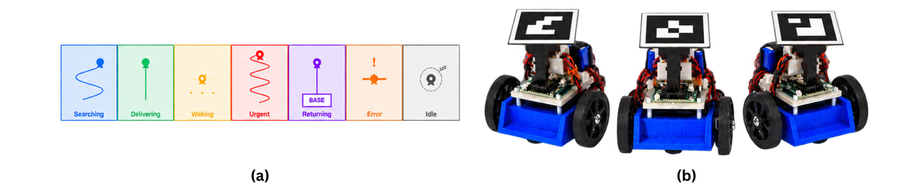

The question
A robot working near people has an internal state — it is searching, it is delivering something, it is in a hurry — and most ways of communicating that state need a screen, a speaker or a manual. ExpressBot asks whether motion on its own is enough: can a person with no robotics background tell what a robot is doing just by watching how it moves?
The system
A fleet of three robots, built for about $30 each, navigating by camera-based ArUco marker tracking. I designed seven motion primitives — Searching, Delivering, Waking, Urgent, Returning, Error and Idle — each one a movement pattern meant to be read at a glance rather than decoded.

What the study found
Eleven participants watched the fleet and reported what they thought each robot was doing. Two results came out of it, and the second one is the reason there is a second project.
- Motion alone carried the state. Non-experts could read what a robot was doing from how it moved, without a screen, a label or an explanation, and rated the system usable (SUS ≈ 70).
- Two primitives collided. Urgent and Searching were regularly confused with each other — both are fast and repetitive, and the distinction I had designed into them was not the distinction people perceived.
- The behaviors did not travel. Every primitive was tuned by hand for one scenario. Moving to a different task meant re-engineering the vocabulary, which no end user could do.
Why this matters for the next project. If a designer hand-authoring behaviors can still pick two that people confuse, the fix is not a better-designed vocabulary — it is letting the people who know the task author the motions themselves, and making those motions reusable when the scenario changes. That is my current thesis work.
Status
Formative work. It has not been submitted for publication; it exists as the study that set up the thesis project, and I describe it here because the failures in it are what the current system is designed around.